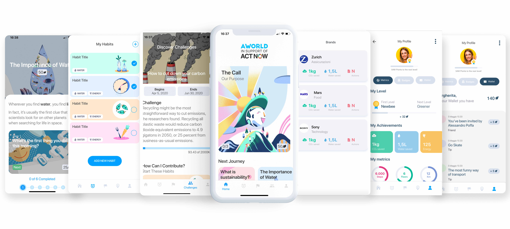

The UN Campaign for Individual Action
COVID-19 has upended our lives. The way we work, the way we interact, the way we move about.This can be a turning point. Let’s seize the moment, and change course -- toward more sustainable lifestyles.
ActNow is the United Nations campaign for individual action on climate change and sustainability.Every one of us can help limit global warming and take care of our planet. By changing our habits and making choices that have less harmful effects on the environment, we have the power to confront the climate challenge and build a more sustainable world.
COVID-19 is a wake-up call from nature. Our lives depend on a healthy planet. Let’s seize the moment and change course – toward more sustainable lifestyles.
Mobile App

Make the shift to a more sustainable lifestyle. The mobile app by AWorld – because there is no planet B – allows you to choose and track a set of sustainable habits, and see the impact you are making in terms of CO2, water and electricity saved. You can also take educational journeys, engage in group challenges, get tips and take quizzes, all geared toward living more sustainably.
Download from App Store